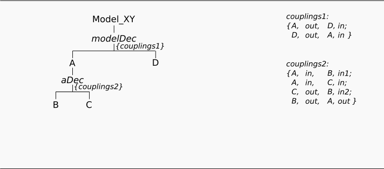
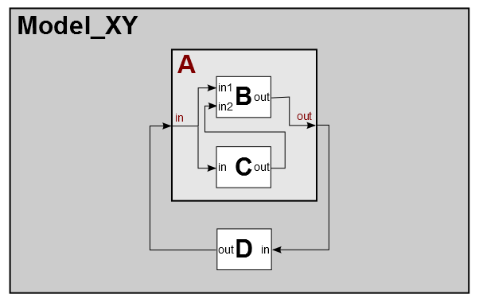

Decomposing Modular-Hierarchical Modelss Using Aspects
(has-a, part-of relation)
Motivation
This example shows, how you can describe the decomposition
of a modular-hierarchical model. Furthermore it shows, how to specify coupling relations beetween model components.
Basic SES:

In the SES specified model structure:

Entities
The model consist of:
- atomic models (AM): B, C, D
- coupled models (CM): A
Description
Adding an Aspect
Aspects describe a decomposition as a has-a (part-of) relation. In the example the Model_XY is decomposed into the entities "A" and "D". The entity "A" is further decomposed into the entities "B" and "C". Here, an Aspect node is used again. Notice, that AM are always modelled as leaf nodes and CM are represented as inner entity nodes in an SES.
Couplings
Aspects can define Couplings between the parent entity and the children entities and the children itself. Therefor entities have a port property. Each coupling relation is defined with a 4-tupel consisting of:
- source component name,
- source port name,
- sink component name,
- sink port name
The following example specifies the coupling relation between "C" and "B" as:
- connect output port "out" from "C" to input port "in2" from "D".
| # | source component | source port | sink component | sink port |
|---|---|---|---|---|
| 1 | C | out | B | in2 |